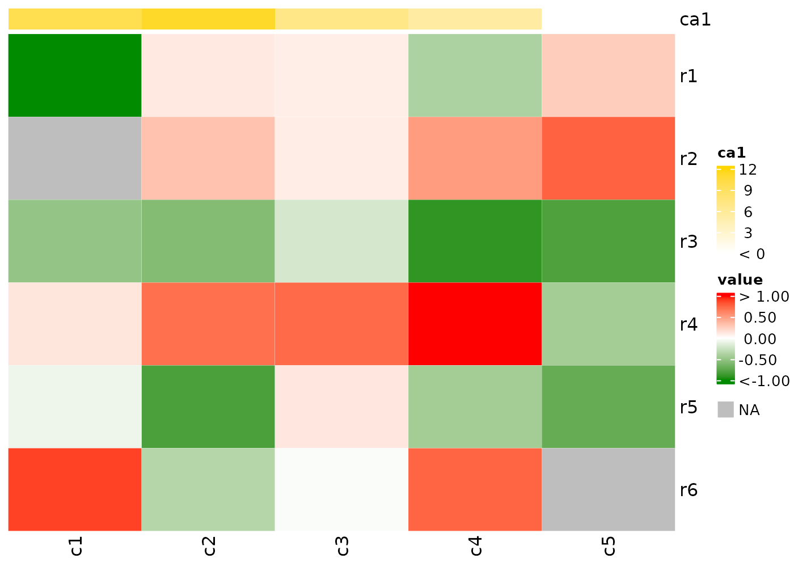
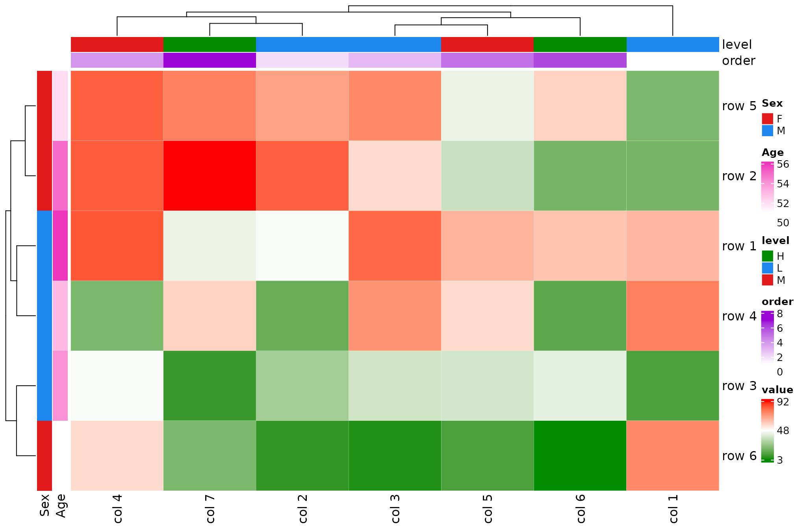

Introduction
cHeatmap is a wrapper of the excellent ComplexHeatmap::Heatmap()
function with additional functions and more friendly interface for some
common tasks in my work, thus called the convenience
Heatmap. I highly recommend reading the ComplexHeatmap
book for more advanced use.
Here are the features:
- Automatic or manual setting of the values of outliers in the input matrix so that the color scale of the heatmap is not dominated by those outliers
- The option to set the color-value mappings in the heatmap legend
- Automatic coloring of the dendrogram
- Easy highlight or display of the values of certain cells
- Discrete color-value mapping for integer matrices containing few unique values
- Clustering of the character matrix based on the orders of characters
- Interface to plot across rows
- Handling of edge cases:
- Inf and -Inf values in input matrix cause errors in
stats::dist()for clustering, they are reset as NA. - If missing values are present in the input matrix or row and column annotations, a legend for missing value is added.
Examples
Reset the value of outliers
Outliers in a numeric matrix dominate the color scale and make the
differences among many cells barely visible, such as nMat1
below.
{r setup, include = FALSE, echo = FALSE}
knitr::opts_chunk$set(
collapse = TRUE,
comment = "#>",
tidy = TRUE
)
library(cHeatmap)
set.seed(100)
nMat1 <- rnorm(30)
uMat1 <- runif(12, -5, 20)
mat1 <- matrix(c(nMat1, uMat1), nrow = 6)
cHeatmap(mat1,
name = "value", # legend title
resetOutliers = F, # do not detect outliers
cluster_rows = F, cluster_columns = F, # no clustering
cellFun = function(x) { x }, # display all the values
column_split = c(rep("nMat1", 5), rep("uMat1", 2)) # mark the two matrices
)
Set resetOutliers = T to detect outliers in
mat1 and reset their values, so that the difference in the
values of nMat1 can be easily visualized. See Reference
Manual for details. Note that the upper label of the legend changes
to >6.6.
cHeatmap(mat1,
name = "value",
resetOutliers = T,
cluster_rows = F, cluster_columns = F,
whiteValue = 0 # set the white values in the legend to 0
)Instead of auto-detecting the outliers, use the colMap
to set the range. Values outside of the range are outliers. The default
of colMap is
c("green4"=NA, "white"=whiteValue, "red"=NA).
cHeatmap(mat1,
name = "value",
resetOutliers = F,
cluster_rows = F, cluster_columns = F,
colMap = c(-1, 0, 3)
)
Only set the upper bound, auto-detect the lower bound.
Manually set the color-value mapping
Set colors and also the value for the middle color.
cHeatmap(mat1,
name = "value",
resetOutliers = F,
cluster_rows = F, cluster_columns = F,
colMap = c("blue" = NA, "green" = 5, "red" = NA)
)
Set the upper and lower bounds.
cHeatmap(mat1,
name = "value",
resetOutliers = F,
cluster_rows = F, cluster_columns = F,
colMap = c("green" = -1, "green4" = 18)
)
Set multiple color-value mappings to visualize both global and local
differences, for example, if the matrix contains two distant clusters -
nMat1 and uMat1.
Also note that Inf is reset to NA to avoid
error in clustering and a legend for missing values is added
automatically.
# create an Inf value
mat2=mat1
mat2[2,2]=Inf
cHeatmap(mat2,
name = "value",
resetOutliers = F,
colMap = c("green4" = -1, "white" = 0, "red" = 1, #cluster 1
"yellow" = 3, "blue" = 18), #cluster 2
column_split = c(rep("nMat1", 5), rep("uMat1", 2))
)
rm(mat2)Adjust the legend to
- lengthen the portion for cluster 1
- shorten the portion between 1 and 3 if majority of cluster 2 are in (3, 18)
- increase the height of the whole legend to 4cm
cHeatmap(mat1,
name = "value",
resetOutliers = F,
colMap = c("green4" = -1, "white" = 0, "red" = 1, #cluster 1
"yellow" = 3, "blue" = 18), #cluster 2
column_split = c(rep("nMat1", 5), rep("uMat1", 2)),
legendBreakDist = c(1, 1, 0.5, 3),
legendHeight = 4
)Set distinct color to different numerical ranges
lt=c(-1,0,1,3,6,9,12,15,18)
cHeatmap(mat1,
name = "value",
resetOutliers = F,
colMap = c(
green = -1, green4 = 0,
red = 10e-6, red4=1,
yellow=1+10e-6,yellow4 = 3,
blue=3+10e-6, blue4 = 18),
legendTicks = lt,
legendBreakDist = rep.int(1,length(lt)-1),
legendHeight = 4,
column_split = c(rep("nMat1", 5), rep("uMat1", 2))
)
Display cell values using cellFun
Show only values in (0.5, 1).
cHeatmap(mat1,
name = "value",
resetOutliers = F,
cluster_rows = F, cluster_columns = F,
colMap = c(-1, 0, 3),
cellFun = function(x) { if (x > 0.5 && x < 1) x }
)Display only the outliers, e.g. those outside of the range of
colMap.
cHeatmap(mat1,
name = "value",
resetOutliers = F,
cluster_rows = F, cluster_columns = F,
colMap = c(-1, 0, 3),
cellFun = "o" # 'o' is hard-coded to represent outliers
)Mark outliers as *; note by default
resetOutliers = TRUE for numeric matrices.

Color outliers by black edge.

Display H if cell values > 2 and L if
< 0.
cHeatmap(mat1,
cellFun = function(x) {
if (x > 2) { "H"
} else if (x < 0) "L"
}
)
Add black edge if cell values > 2 and display L if
< 0.
Color dendrograms and split the clusters
nRowCluster and nColmCluster specify the
number of colors in the corresponding dendrograms.
cHeatmap(mat1,
name = "value",
resetOutliers = F,
nRowCluster = 2, nColmCluster = 3,
row_split = 2, column_split = 3
)
Integer matrices
If the number of unique values is greater than
intAsDiscreteCutoff whose default value is 6 in
cHeatmap parameter settings, the color mapping is
continuous; otherwise, the mapping is discrete.

Set colors manually and show numbers 1, 3, and 5.
Character matrices
Cluster the matrix by converting characters to their alphabetic
orders, i.e. a .. f to 1 .. 6, and manually
set the color-value mappings.
Row and column annotation
# create the matrix ----
mat1 <- matrix(sample(1:100, 42, TRUE), nrow = 6)
rownames(mat1) <- paste("row", 1:6)
colnames(mat1) <- paste("col", 1:7)
# create the row annotation data frame ---
rowDf <- data.frame(Sex = c("F", "F", "M", "M", "F", "M"), Age = 51:56)
rownames(rowDf) <- paste("row", 6:1)
# create the column annotation data frame ---
colDf <- data.frame(level = c("H", "H", "M", "M", "L", "L", "L"), order = 7:1)
rownames(colDf) <- paste("col", 7:1)
# make sure the rows and columns of the annotation data frame are at the same
# order as those of mat1
stopifnot(all(rownames(mat1) %in% rownames(rowDf)) && nrow(mat1) == nrow(rowDf))
rowDf <- rowDf[rownames(mat1), ]
stopifnot(all(colnames(mat1) %in% rownames(colDf)) && ncol(mat1) == nrow(colDf))
colDf <- colDf[colnames(mat1), ]
cHeatmap(mat1, name = "value", rowAnnoDf = rowDf, colmAnnoDf = colDf)
Set some annotation colors manually.
Plot inside each row using rowDraw
Here painScore of patient 2 is plotted
across visits. Its values are transformed to the range of (0,1),
representing relative values across visits.
mat1 <- matrix(c(nMat1, uMat1), nrow = 6)
rownames(mat1) <- paste("pt", 1:6)
colnames(mat1) <- paste("visit", 1:7)
painScore <- rnorm(7)
cHeatmap(mat1,
name = "value", cluster_columns = F,
rowDraw = list(
list("grid.lines", col = "black", lwd = 2),
matrix(painScore, nrow = 1), # data to be plotted
2 # plot at the 2nd row of mat1
)
)Plot both lines and points in multiple rows.
# longitudinal scores of four patients
painScore <- matrix(rnorm(28), nrow = 4)
cHeatmap(mat1,
name = "value", cluster_columns = F,
rowDraw = list(
list(
list("grid.points", size = 0.5, pch = 15, col = "blue"),
list("grid.lines", col = "black", lwd = 2)
),
painScore,
c(2, 3, 4, 5) # row indices of the four patients in mat1
)
)